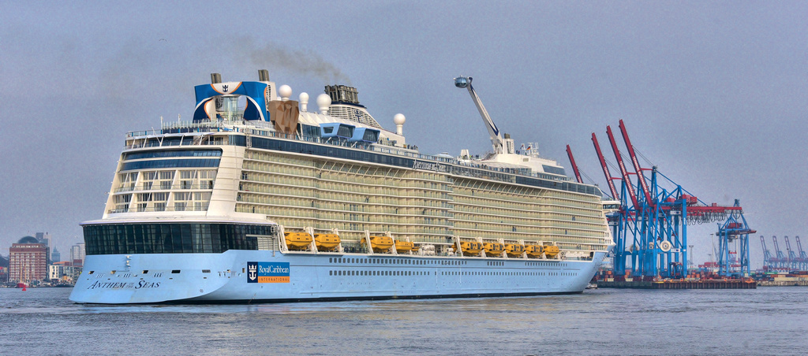

Overview
Quantum of the Seas is a Quantum-class cruise ship was built at Meyer Werft shipyard in Papenburg, Germany for Royal Carribean International. Her first voyage was in November 2, 2014 from England to Cape Liberty in Bayonne, New Jersey, United States.
Quantum of the Seas sailed from New Jersey, United States for about 6 months (November 2014 - April 2015) then, in May 2015, she repositioned to China. In late June 2015, she began sailing from Shanghai, China to Japan and Korea. Amenities have been changed to cater the needs of the Asian market; these changes are but not limited to bigger casinos and modifying the menus to more Asian cuisine.
Quantum of the Seas was christened on November 14, 2014 and her godmother is American actress and singer Kristin Chenoweth.
Anthem of the Seas is the second ship of the Quantum class. Quantum class is a class of cruise ships from Royal Carribean International Cruise Ship which is the second largest class of passenger ships based on gross tonnage. Her maiden voyage was in April 22, 2015 from Southampton, England to Bayonne, New Jersey, United States. Quantum of the Seas and Anthem of the Seas have the same length and weight.
Anthem of the Seas was christened on April 20, 2015 in England and her godmother is Emma Wilby, A British travel agent.
Quantum of the Seas and Anthem of the Seas have almost the same amenities, except the later is the first cruise ship to offer an on-board live room escape game, Puzzle Break's "Escape from the Future."
Anthem of the Seas Cruise Ship
State Rooms
Quantum of the Seas and Anthem of the Seas have 2,090 rooms, can accomodate about 4150 guests and 1,500 crew. Each cabin comes in different sizes to accomodate the number of guests in a group:
- Interior: 149sq ft to 193sq ft
- Oceanview/Central Park view: 179sq ft to 199sq ft
- Balcony: 230sq ft to 250sq ft
- Mini Suite: 287dq ft
- Suite: 476sq ft to 1500sq ft
- Family: 260sq ft to 300sq ft
Cabin
Amenities
Things to do on board:
- Dining Venues/Restaurants
- Royal Theatres
- "North Star Observation Deck
- Bionic Bar
- Surf Simulator
- Rock Climbing Walls
- "RipCord by IFLY", Flight Simulator
- Medical Center
- Conference Room
- Spa/Fitness
- Outdoor Movie Screen
- Dreamworks Experience (Quantum)
- Casino
- Video Games/Arcade
- Sports Court
- Music Hall
Flight Simulator